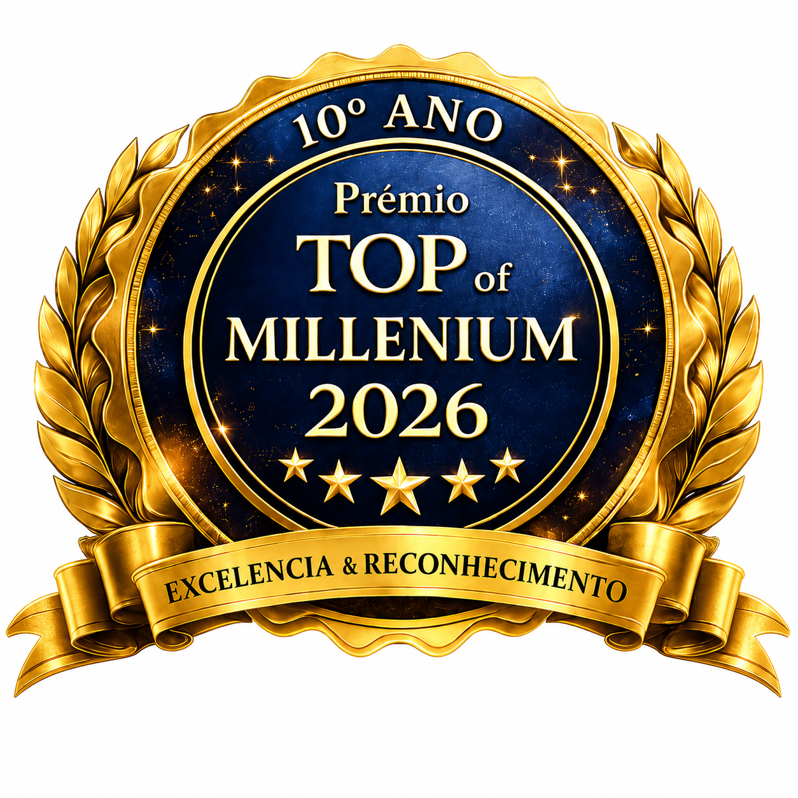

Brasília
Política, governo, economia local, eventos e bastidores da capital.
Um ecossistema nacional de mídia, negócios, notícias 24h, política, internacional, turismo, gastronomia, imóveis, cidades, entrevistas e inteligência artificial.
Dra. Deijanete IA e Paulo Fayad IA no ar, em boletins contínuos.
apresentadora digital
âncora de notícias 24h
A VOZ IA organiza manchetes, fontes e comentários jornalísticos. O modelo simula a curadoria de grandes veículos, sempre com referência e comentário próprio.
Política, governo, economia local, eventos e bastidores da capital.
Principais acontecimentos nacionais com linguagem clara e rápida.
CNN Internacional, diplomacia, economia global e tendências.
CNN Brasil, Globo, Record, Metrópoles, Correio Braziliense e portais oficiais.
Um modelo visual de estúdio jornalístico premium, com bancada, LEDs, microfones VOZ IA e simulação de narração.
Brasília, Brasil e mundo em atualização contínua
Comentário institucional, humano e estratégico.
Manchetes, bastidores e análise jornalística.
Espaço para entrevistas, cortes, bastidores, agendas e anúncios institucionais.
Senado, Câmara, ministérios, GDF, entidades e lideranças empresariais.
Patrocínio de instituições, entidades, empresas e campanhas de interesse público.
Entrevistas diplomáticas, cooperação econômica, turismo, cultura e oportunidades entre países.
Área reservada para embaixadas, organismos, câmaras de comércio, missões e parceiros internacionais.
Área estratégica para anúncios de imobiliárias, construtoras, lançamentos e atuação imobiliária de Paulo Fayad.
A VOZ IA abre uma frente para ESG, meio ambiente, projetos sociais, economia verde, educação ambiental e campanhas de responsabilidade institucional.
Área preparada para integrar o canal @tvvozdebrasilia, organizar entrevistas por categoria e transformar cada entrevista em até 10 cortes para Reels, Shorts, TikTok, Kwai e portal.
Carrossel e vitrine para entrevistas completas.
Transformação de conteúdo longo em vídeos curtos para redes.



Jornalista MTB/DF 8872, editor da Voz de Brasília há mais de 30 anos, diretor do portal, professor, vice-presidente do IBJ e liderança institucional.
Advogada, jornalista, psicanalista, teóloga, gestora da TV Voz de Brasília e presidente do Instituto Brazil Just.
A força institucional da TV Voz e da VOZ IA conectada a campanhas sociais, saúde, esporte, educação, inclusão e cidadania.
Preencha o formulário rápido. Ao enviar, a equipe comercial recebe seu interesse pelo WhatsApp.